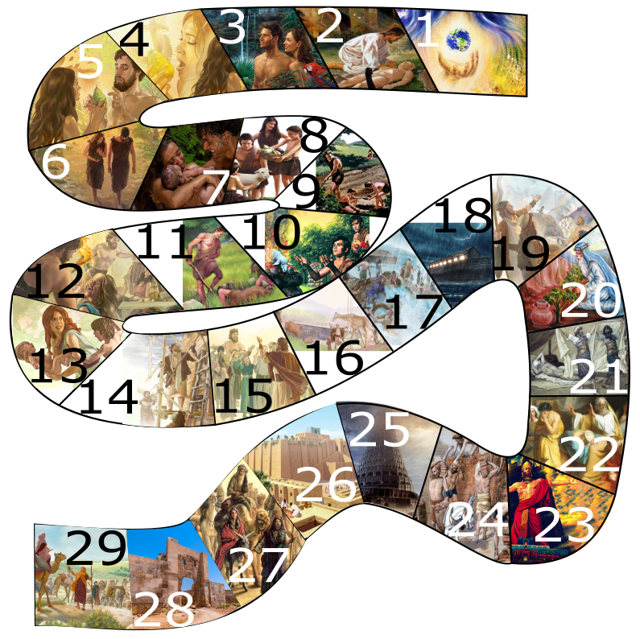
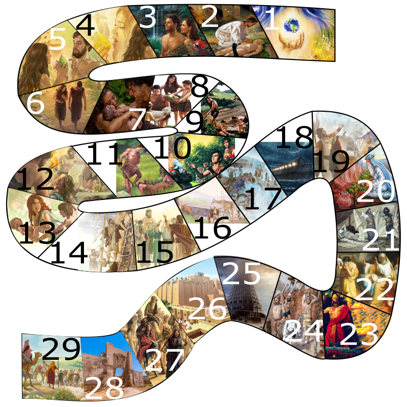

Connect Teens
Genesis
Detalhes da criação
Expulsão do Éden
O pecado foi o motivo do impedimento do homem de permanecer no jardim de Deus, também houve o primeiro relato de sacrifício de animais para que sua nudez fosse coberta. Desde então um anjo com uma espada flamejante, cerram as portas do Éden e as guardam.
A expulsão de Adão e Eva do lugar que Deus preparou para que vivessem, o Éden, trouxe consequências para todos os seus descendentes, vivemos hoje em um lugar que nos foi dado por conceção e não pelo desejo de Deus, pelo Senhor, estaríamos lá até hoje, porém Deus em sua infinita misericórdia, diante da maldição que tomamos sobre nós, e executa seu plano de resgate desde o principio da história da humanidade.
Especulações sobre a localização do Edén
Deus rejeitou a oferta de Caim e aceitou a oferta de Abel
Em primeiro lugar é preciso observar que Deus não pode ser comprado por uma oferta. Não podemos enganar Deus com bajulações. A visão de Deus se uma oferta é correta ou não, está mais ligada ao coração e motivação daquele que ofertou do que com a oferta em si. Observe que Deus se agradou “de Abel” e “de sua oferta”. Primeiro o Senhor olhou para o coração e a motivação de Abel, e depois observou que sua oferta era adequada. Da mesma forma Deus não se agradou “de Caim” e “de sua oferta”. Algo no coração e motivação de Caim não agradou a Deus. Mas que ‘algo’ era esse?
Observe que a atitude de Caim após a sua rejeição e de sua oferta mostrou o que de verdade ele tinha em seu coração. Ele não amava a Deus. Ele se irou, permitiu que a ira mudasse até o seu rosto, matou seu irmão cruelmente e foi mal criado com Deus (vs 6-10). Isso deixa claro que Deus o rejeitou porque ele era maligno.
Voltando a questão da oferta, veja que Caim trouxe uma oferta “do fruto da terra”. Algo que não lhe custou nada. Quem sabe algo que ele pegou em qualquer lugar e ofereceu a Deus. Abel, por sua vez, deu algo das “primícias do seu rebanho e da gordura deste”. Primícias é a parte mais preciosa de algo, a primeira parte. Abel ofereceu a Deus o melhor que tinha, enquanto Caim não se preocupou muito com o que ofereceu. Isso ocorreu por causa do que já existia dentro de seus corações. Caim tinha um coração maligno. Abel tinha um coração de adorador.
Analise sobre Caim e Abel
Genealogias de Caim e Sete
A vida no tempo de Noé
A Terra estava povoada pelos descendentes de Adão, descendentes de Sete e Caim. "E como aconteceu nos dias de Noé, assim será também nos dias do Filho do homem."(Lc 17:25-16). O mundo ficou cheio de pessoas que faziam coisas más. A Bíblia diz que “a maldade do homem era grande na terra e . . . que toda inclinação dos pensamentos do seu coração era só má, todo o tempo”
Veja tambem: https://overbo.news/vivendo-dias-noe/
A arca de Noé
A origem do povos após diluvio
Panorama da entrana na Arca até a Terra secar
Porque Canaã foi amaldiçoado no lugar de Cam?
Gênesis 9:20-29
Pesquisa:
Benção e Maldição na familia de Noé
Esclarecimento quanto a maldição sobre africanos e negros
A maldição de Canaã e seus decendentes
Os Sumérios
O Sonho Globalista de Ninrode
Quem foi Ninrode
Ninrode foi filho de Cuxe, neto de Nóe, Ninrode foi poderoso caçador diante do Senhor porém, um dominador que edificou várias cidades (Ereque, Aeade, Calná) entre elas Nínive onde mais tarde o Profeta Jonas foi enviado e a mais famosa Babel, onde todos eram extremamente unidos para o mal e desejavam chegar até aos céus.
A torre de Babel
A Babiblonia
Patriarcas e nações correspondentes
SEM e seus filhos - Povos Semitas - Gen 5:32, 10:22-31
Obs: O filho de Arã, Uz, edificou a cidade de onde a biblia aponta como a Terra de Jó (Jó 1:1)
CAM e seus filhos- Genesis 10:6-10
JAFÉ e seus filhos - (Gn 10:2-5)
Curiosidades
Jericó era um cidade cananéia, eles habitavam as regiões de Sodoma e Gomorra até Lasa. Ninrode foi filho de Cuxe, neto de Nóe, Ninrode foi poderoso caçador diante do Senhor porém, um dominador que edificou várias cidades (Ereque, Aeade, Calná) entre elas Nínive onde mais tarde o Profeta Jonas foi enviado e a mais famosa Babel, onde todos eram extremamente unidos para o mal e desejavam chegar até aos céus. Casluim filho de Mizraim foi pai dos Filisteus onde mais tarde Sansão, juiz de Israel, e o Rei Davi, lutaram contra eles, Golias era Filisteu Em Apocalipse, temos as cidades de Gomer e Magogue referenciadas na batalha do Armagedom. Quitim também e chamado de Chipre em alguns textos antigos. Ver https://www.respostas.com.br/gogue-e-magogue/
Como utilizar o Material?
Clique no dado e arraste o pino para o tabuleiro.
Como posso jogar?
Podemos jogar em até 4 pessoas ou em até 4 equipes.
Como jogar?
Jogue o dado (clique no dado) e coloque o pino correspondente ao jogador/equipe na
respectiva a casa (Clicando e arrastando o pino) do tabuleiro de acordo com o numero
apresentado no dado.
Como avançar no jogo?
Clique em Start, logo em seguida clique na caixa surpresa, responda as perguntas, acumule pontos, o primeiro que chegar ao fim, vence.
Dessa forma, sucessivamente quem estiver o numero de pontos imediatamente menor após o vencedor assumira as demais colocações.

 

{kind=link}